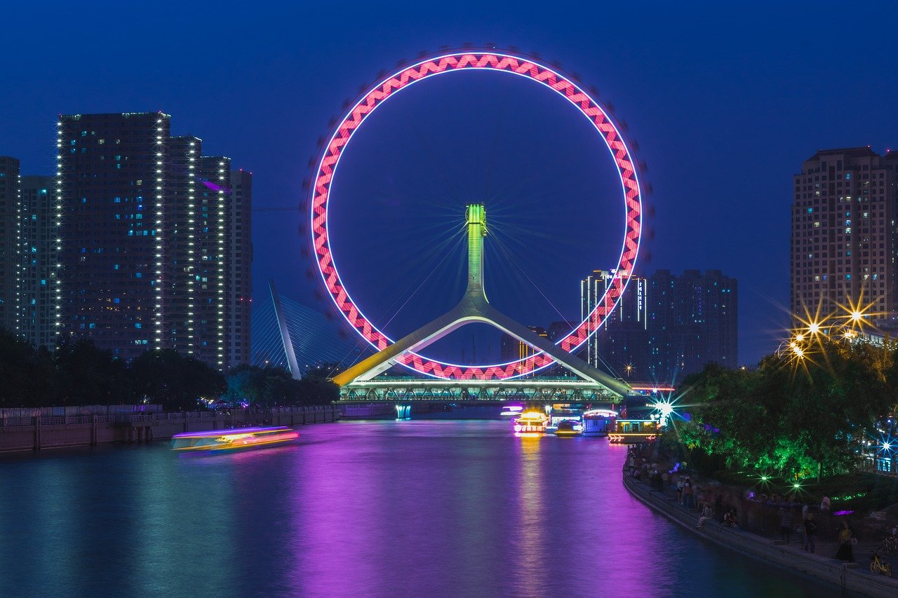
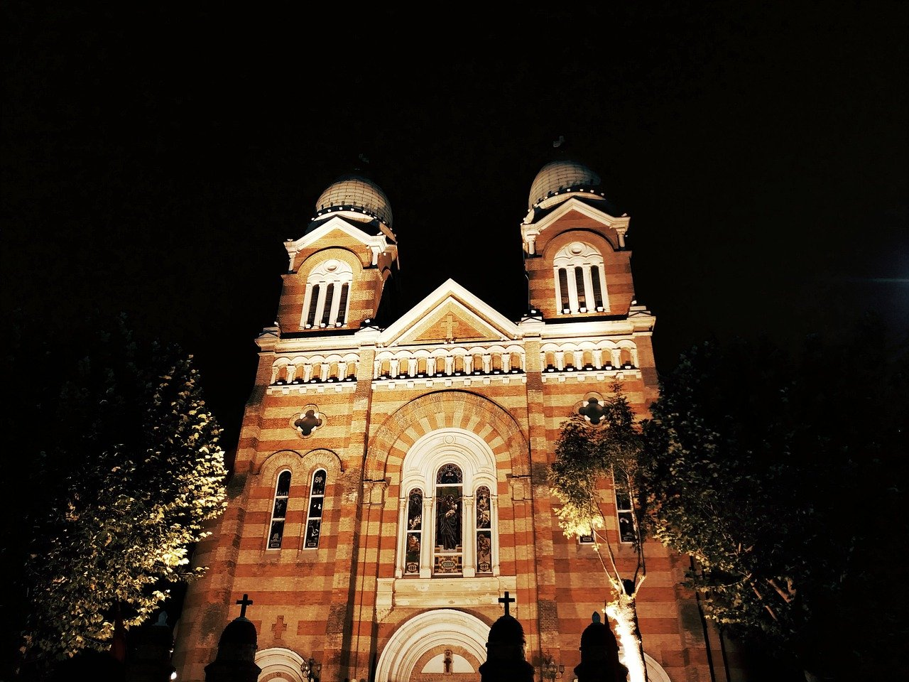
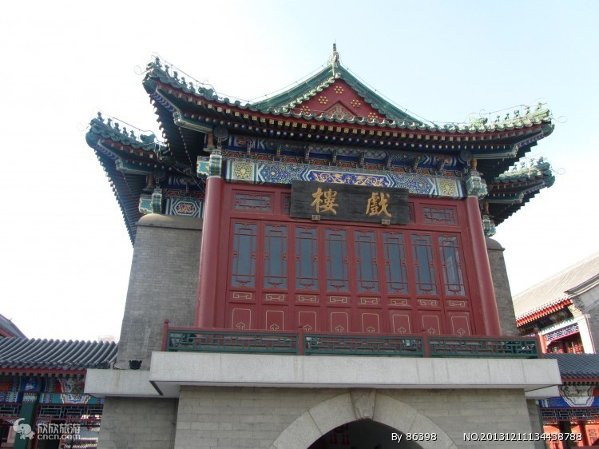
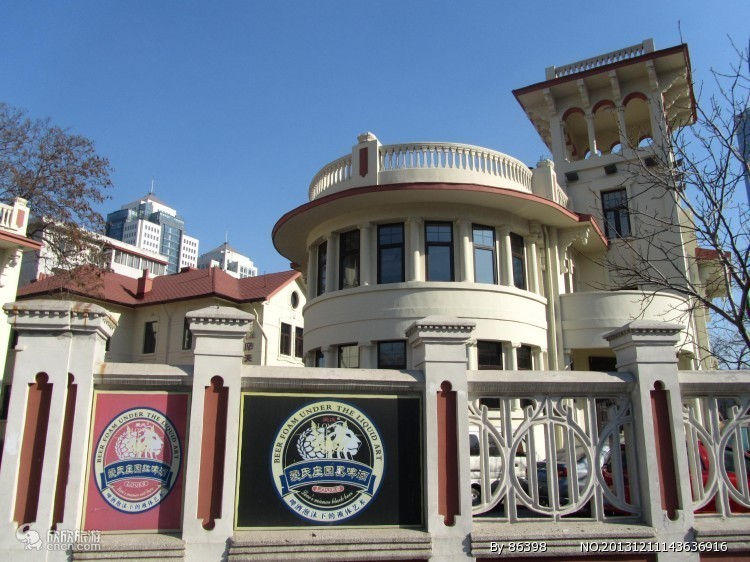

天津之眼摩天轮简介：
天津之眼的传说，说摩天轮上的每个盒子里都装满了幸福，所以当人们仰望摩天轮时，就是在仰望幸福。
天津之眼是世界唯一建在桥上的摩天轮，也给了期待幸福的人们更多的渴望。确实，天津之眼从“睁开”
的那一天起，就开始让幸福飘溢，就开始守望我们这座希望之城并见证它的不断变迁。永乐桥摩天轮的
直径为110米，到达最高点时，距离地面的高度可达到120米左右，相当于35层楼的高度，能看到方圆40
公里以内的景致，是名副其实的“天津之眼”。
这是中国十大城市地标建筑之一。座摩天轮不仅将成为世界上唯一建在桥上的摩天轮，也
将成为天津市的标志性景观之一。


西开教堂简介 西开教堂又称法国教堂。在天津和平区滨江道独山路原墙子河外老西开一带，故名。包括天主教总堂和
大教堂，分别建于1914年和1917年，为法国天主教所建。大教堂采用法国罗曼式建筑造型，高45米，建筑面
积1585平方米，平面呈长十字形，正面和后部耸立高大塔楼三座，呈"品"字型，楼座以黄、红花砖砌成，上
砌翠绿色圆肚形尖顶．檐下为半圆形拱窗。堂内为三通廊式，内墙彩绘壁画，装饰华丽。西开教堂是天津教
堂中规模最大的一座。现已修饰一新，对外开放。


天津古文化街简介：在天津，想大致领略一番津味、古味、文化味的朋友，最佳去处莫过于古文化街了。古文化街由
宫南宫北大街和宫前广场三部分组成，全长580米，街宽7米，天后宫位于全街中心。全部建筑为砖木
结构，是目前天津市最大的一处仿古建筑群。建筑格调为仿清、民间、小式的风格。
海河意式风情区简介：
坐落在河北区南端，曾是天津近代史上意大利租借地的中心区，已有近百年历史。原有街区及建筑基本保持原貌，
是至今我国乃至东南亚地区最大的也是唯一的意大利文化集中地，几乎包含了意大利各个时期不同风格的建筑。
航拍天津视频